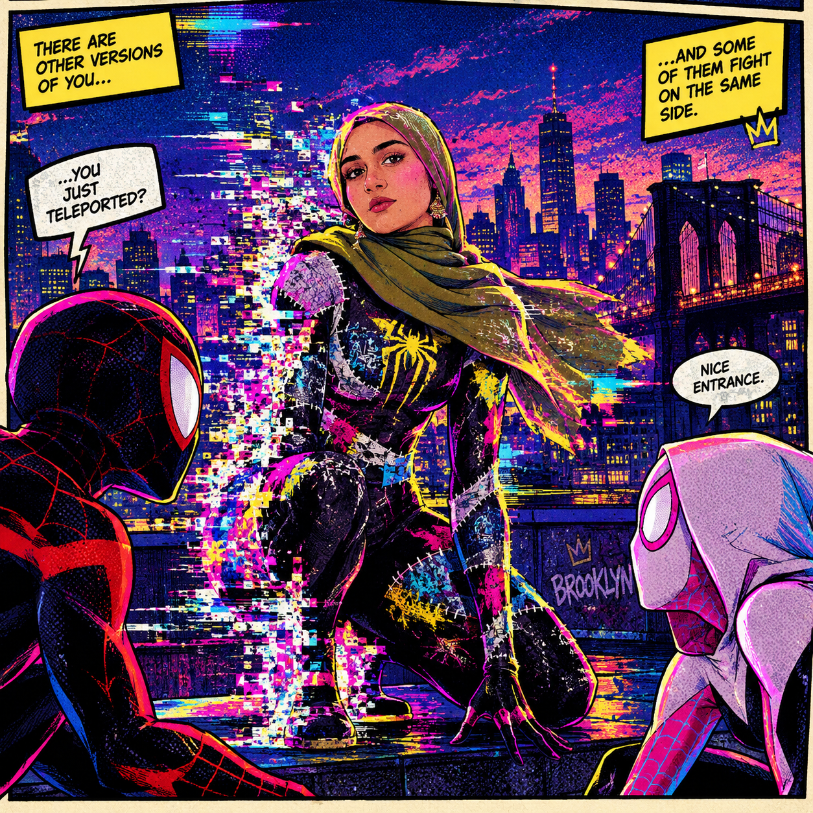

It happened at 11:47 PM, mid all-nighter, my laptop screen bleeding static across my bedroom wall. One second I was debugging code; the next, the static reached out and pulled me straight through it. I fell through a hallway made of comic-panel gutters, each frame a different color palette, each one flickering like a bad connection — and then I hit the ground, hard, in the middle of Brooklyn. A glitching, halftone-dotted, impossibly alive Brooklyn.
I was still flickering — my own outline glitching in and out of frame — when a figure in a red-and-blue-and-black suit dropped from a fire escape and landed in a three-point crouch two feet away.
"Okay," he said, tilting his head, "that is NOT a normal glitch."
That was Miles. Ten seconds later, Gwen dropped in beside him, spinning her glitchy pink-and-white sound-hammer over one shoulder like it weighed nothing.
"New anomaly?" Gwen asked, not even a little surprised. "Cute effect, though."

Turns out I wasn't just visiting — my arrival had torn a small hole in the dimensional canon, and every hour I stayed, the glitch-static around me spread a little further into their world. Miles and Gwen had two choices: send me home immediately, or teach me to control it before I destabilized the whole borough.
• Miles Morales — steady, funny, weirdly good at making a stranger from
another universe feel welcome.
• Gwen Stacy — sharp, protective of her people, first to trust me with
real responsibility.
• A handful of Spider-Society members, glimpsed through a portal doorway,
already whispering about "the new glitch girl."
My power was unpredictable — I froze mid-sentence more than once, glitching out of sync with my own timeline. Worse, something in the static that brought me here was hunting the tear I'd left behind, and it wasn't friendly. Every training session with Miles and Gwen was really a race against a bigger anomaly, closing in.